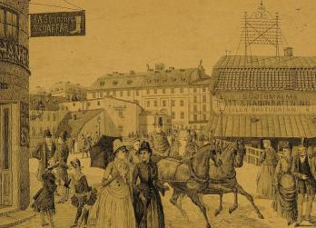
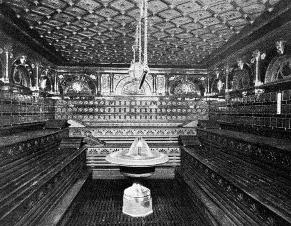
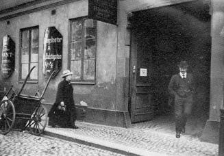
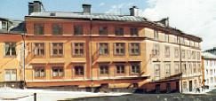
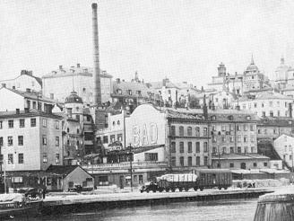

Södermalm i tid och rum. Stockholm

Vy över Västra Slussgatan mot Södermalmstorg. Till höger hus med reklamskylt för Södermalms Tvätt- och badinrättning, Lilla Bastugatan 4. På husets tak en telefongalge. Per Röding, teckning 1886.

Bastugatan 4. Södermalms Badinrättning. 1897.

 Hit gick många med tunga steg, Pantlånekontoret Bastugatan 4. Den kullriga stensättningen gjorde inte vandringen lättare. Foto omkring 1911. Dagens Nyheter.
Hit gick många med tunga steg, Pantlånekontoret Bastugatan 4. Den kullriga stensättningen gjorde inte vandringen lättare. Foto omkring 1911. Dagens Nyheter.

Bastugatan 6. Gathuset fanns 1711, tillbyggdes fram till Maria Trappgränd ca 1755, reparerades efter branden 1759 och påbyggdes en våning 1760-61, ytterligare en våning 1861. Gårdshuset fanns 1748 och förlängdes fram till trappgränden 1856 genom fabrikör S. Sahlberg, som samma år inköpt fastigheten. Förutom förändringar av husen mot Bastugatan och Pryssgränd lät han år 1856 uppföra ett tvåvåningshus intill Söder Mälarstrand 15 för att tjäna som verkstadshus för den metallindustri som Sahlberg förlade hit. Lappskon Större 4 förvärvades av staden 1930. Senast ombyggt: 1971.

 Tyvärr har Söderbadet med adress Bastugatan 4 försvunnit. Det hade ett eget reningsverk eftersom
badet tog vatten direkt ur Mälaren på samma sätt som Sturebadet länge kunde använda en brunn i
källaren. Den var ett minne från den gamla rännilen som följde nu-
vattnet. En följd av att Söderbadet använde sig av sjövatten blev att de rättrogna judarna förlade sina
ritualbad dit. En liten bassäng hade en lucka i väggen och genom den strömmade vattnet från den större
bassängen. Det gav en viss illusion av jordans vatten. judiska brudbad förekom ännu 1944. (Ur Tjerneld, Stockholmsliv i vår tid, 1972)
Tyvärr har Söderbadet med adress Bastugatan 4 försvunnit. Det hade ett eget reningsverk eftersom
badet tog vatten direkt ur Mälaren på samma sätt som Sturebadet länge kunde använda en brunn i
källaren. Den var ett minne från den gamla rännilen som följde nu-
vattnet. En följd av att Söderbadet använde sig av sjövatten blev att de rättrogna judarna förlade sina
ritualbad dit. En liten bassäng hade en lucka i väggen och genom den strömmade vattnet från den större
bassängen. Det gav en viss illusion av jordans vatten. judiska brudbad förekom ännu 1944. (Ur Tjerneld, Stockholmsliv i vår tid, 1972)